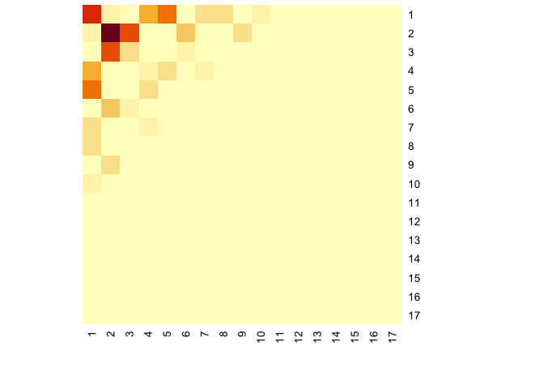
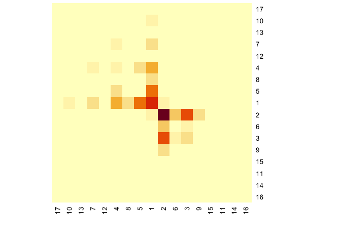
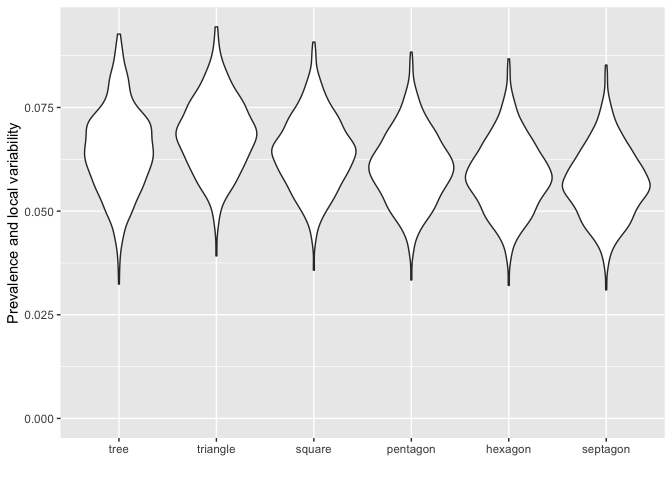

The goal of nethist is to estimate graphons by network histogram (Wolfe and Olhede 2013; Olhede and Wolfe 2014). It also provides extra tools for summary violin plot for networks (Maugis, Olhede, and Wolfe 2017) and visualizing network histogram.
nethist() is an RcppArmadillo (Eddelbuettel and Sanderson 2014) implementation of the original MATLAB code in Olhede and Wolfe (2014). To install the package from source, you need C++ and Fortran compilers. Use undirected and simple graphs with no self-loops (either igraph or matrix) as inputs for the functions in this package.
Installation
You can install the development version of nethist from GitHub with:
# install.packages("devtools")
devtools::install_github("EnigmaSong/nethist")Example
Here are basic examples using political blog data set in the package:
Network histogram
We use polblog dataset in the package for our examples.

First, we estimate a network histogram from the political blog data and plot it.
## Example code using polblog data set
set.seed(42)
hist_polblog <- nethist(polblog, h = 72) #using user-specified bin size.
plot(hist_polblog)
You can use a user-specified indices for plots. Here is an example:
print(ind)
#> [1] 17 10 13 7 12 4 8 5 1 2 6 3 9 15 11 14 16
## Users can specify the index order of heatmap
plot(hist_polblog, idx_order = ind)
## Users can specify the color palette
library(RColorBrewer)
plot(hist_polblog, idx_order = ind, col = brewer.pal(9, "Greys"))
You can display the estimated block probabilities by setting prob=TRUE.
## Users can specify the color palette
plot(hist_polblog, idx_order = ind, prob= TRUE, prob.col = "blue",
col = colorRampPalette(colors=c("#FFFFFF","#000000"))(200))
Summary violin plot
If you want to check network summary violin plot of the data set:
#User-specified subsample size.
violin_netsummary(polblog, max_cycle_order = 7, subsample_sizes = 250)
#> Use R= 697
#Auto-selected subsample size.
violin_netsummary(polblog, max_cycle_order = 7)
#> Use R= 697